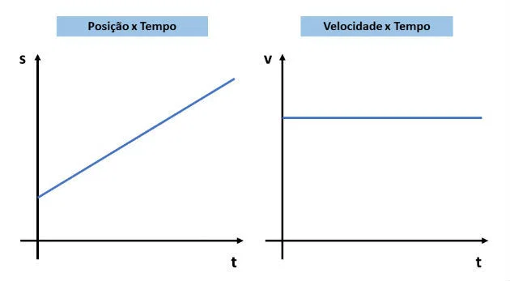

Movimento Uniforme
Movimento Uniforme (MU) representa o deslocamento de um corpo a partir de determinado referencial , sob velocidade constante. Dessa forma, o movimento uniforme ocorre quando um corpo percorre distância iguais em intervalos de tempos iguais. Por exemplo, um carro que percorre uma trajetória (São Paulo-Rio de Janeiro) com velocidade constante de 120 km/h.
Note que no movimento uniforme (MU) a trajetória percorrido pelo corpo pode ter diversas formas (reta, circular, curvilínea, etc.), desde que o corpo permaneça com velocidade constante. Diferentemente do movimento retilíneo uniforme (MRU) onde corpo está sob velocidade constante, contudo, a trajetória percorrida pelo corpo é em linha reta, por isso, o nome retilíneo.
Fórmulas Principais:
Velocidade Média / Constante:
Onde:
ΔS: intervalo de deslocamento (espaço) – posição final menos a posição inicial (Sfinal – Sinicial);
ΔT: intervalo de tempo – tempo final menos o tempo inicial (Tfinal – Tinicial);
Função Horária da Posição:
S = S0 + Vt
Onde:
S: Posição final
S0: Posição inicial
V: Velocidade
t: Tempo
Gráficos do movimento Uniforme:
A função horária do movimento uniforme é uma função do 1º grau. Desta forma, seu gráfico será uma reta cuja inclinação será igual ao valor da velocidade. Podemos ainda, representar o gráfico da velocidade em função do tempo. Este gráfico será o da função constante, pois a velocidade apresenta o mesmo valor ao longo do tempo. Em um gráfico da velocidade em função do tempo a área da figura abaixo da curva representa a distância percorrida no movimento. Essa propriedade simplifica o cálculo da distância a partir do gráfico da velocidade.
